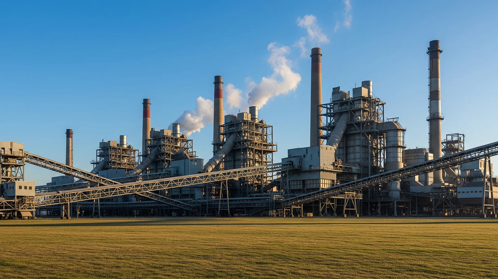

Four continents. Real operating data.
Every project status below reflects the actual stage of engagement. Active means operating. Paid pilot means a commercial contract is in place. LOI and MOU are signed but pre-deployment.

Morocco
Saline groundwater desalination with brine valorisation. Seawater-intruded aquifer (~7,000 ppm TDS). Funded by Flanders Climate Action Programme. Targets high-recovery output with performance tracked through live operating data.

Perth, Australia
Selective nitrate and salinity removal across three public utility sites. Water Corporation of Western Australia. Cloud-monitored telemetry. Paid pilot contract — primary institutional utility reference.

Brazil
Remote groundwater in a region with co-contamination of nitrate and elevated salinity. Target recovery 95–98%. Full project scope in development following signed Letter of Intent.

Saudi Arabia
Selective magnesium ion recovery from deep brackish groundwater. Brine valorisation pathway — Mg²⁺ extraction from concentrate stream. Pilot design in development following signed MOU.